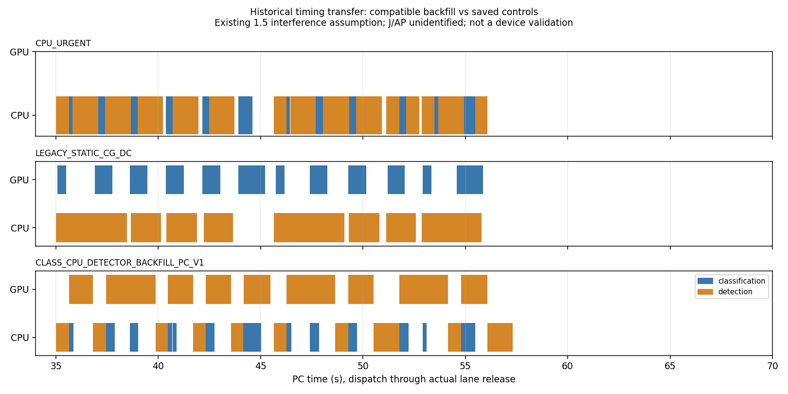

과거 CAL03 시간자료를 전용한 사후 PC 개발 결과입니다. 새 기기 자료·현재 J/AP 예측·정책 우월성·독립 예측 확인이 아닙니다. 비용 결측을 0으로 채우지 않았습니다.
새 16계산/768요청, 저장된 동일 입력 정적 48계산 재사용. 큐는 실제 도착만 사용하고 worker_release 뒤 실제 lane_available까지 busy입니다. 같은 종류의 CPU/GPU 병행은 차단합니다. 신규 물리 가정·기기 명령·계획·claim은 0입니다.
저부하는 CPU 기준과 동일, queue는 긴급/일반 응답의 상충, burst는 전체 기한 미충족입니다. 새 기본 정책으로 채택하지 않습니다. 현재 실측 기반 EFT와 이 과거 시간 프로필의 원 지연값을 직접 비교하지 않습니다.
근거·한계·재현 · 동일 seed 대조 · 집계 CSV

| envelope | interference | policy | seed_cases | planned | completed | deadline_met | mean_urgent_p95_ms | mean_normal_mean_ms | unmeasured_concurrency_s | energy_j | ap_peak_c | current_profile_supported |
|---|---|---|---|---|---|---|---|---|---|---|---|---|
| g0.15_c0.5_b8 | 1.0 | CLASS_CPU_DETECTOR_BACKFILL_PC_V1 | 2 | 96 | 96 | 60 | 950.0277 | 7564.6734 | 0.0 | 미계측 / null | 미계측 / null | False |
| g0.15_c0.5_b8 | 1.0 | CPU_URGENT | 2 | 96 | 96 | 56 | 1084.9949 | 8558.1819 | 미계측 / null | 미계측 / null | 미계측 / null | False |
| g0.15_c0.5_b8 | 1.0 | LEGACY_STATIC_CC_DG | 2 | 96 | 96 | 60 | 691.9977 | 11344.8899 | 미계측 / null | 미계측 / null | 미계측 / null | False |
| g0.15_c0.5_b8 | 1.0 | LEGACY_STATIC_CG_DC | 2 | 96 | 96 | 74 | 1622.5186 | 4941.9033 | 미계측 / null | 미계측 / null | 미계측 / null | False |
| g0.15_c0.5_b8 | 1.5 | CLASS_CPU_DETECTOR_BACKFILL_PC_V1 | 2 | 96 | 96 | 46 | 8641.7798 | 7341.7465 | 0.0 | 미계측 / null | 미계측 / null | False |
| g0.15_c0.5_b8 | 1.5 | CPU_URGENT | 2 | 96 | 96 | 56 | 1084.9949 | 8558.1819 | 미계측 / null | 미계측 / null | 미계측 / null | False |
| g0.15_c0.5_b8 | 1.5 | LEGACY_STATIC_CC_DG | 2 | 96 | 96 | 56 | 924.5074 | 12260.8108 | 미계측 / null | 미계측 / null | 미계측 / null | False |
| g0.15_c0.5_b8 | 1.5 | LEGACY_STATIC_CG_DC | 2 | 96 | 96 | 33 | 3645.5662 | 6906.1753 | 미계측 / null | 미계측 / null | 미계측 / null | False |
| g0.45_c0.5_b4 | 1.0 | CLASS_CPU_DETECTOR_BACKFILL_PC_V1 | 2 | 96 | 96 | 96 | 833.2036 | 1876.7434 | 0.0 | 미계측 / null | 미계측 / null | False |
| g0.45_c0.5_b4 | 1.0 | CPU_URGENT | 2 | 96 | 96 | 96 | 854.0858 | 1433.9718 | 미계측 / null | 미계측 / null | 미계측 / null | False |
| g0.45_c0.5_b4 | 1.0 | LEGACY_STATIC_CC_DG | 2 | 96 | 96 | 80 | 450.107 | 5195.3404 | 미계측 / null | 미계측 / null | 미계측 / null | False |
| g0.45_c0.5_b4 | 1.0 | LEGACY_STATIC_CG_DC | 2 | 96 | 96 | 96 | 884.6785 | 1158.148 | 미계측 / null | 미계측 / null | 미계측 / null | False |
| g0.45_c0.5_b4 | 1.5 | CLASS_CPU_DETECTOR_BACKFILL_PC_V1 | 2 | 96 | 96 | 96 | 947.6365 | 2299.2754 | 0.0 | 미계측 / null | 미계측 / null | False |
| g0.45_c0.5_b4 | 1.5 | CPU_URGENT | 2 | 96 | 96 | 96 | 854.0858 | 1433.9718 | 미계측 / null | 미계측 / null | 미계측 / null | False |
| g0.45_c0.5_b4 | 1.5 | LEGACY_STATIC_CC_DG | 2 | 96 | 96 | 73 | 593.166 | 5850.6292 | 미계측 / null | 미계측 / null | 미계측 / null | False |
| g0.45_c0.5_b4 | 1.5 | LEGACY_STATIC_CG_DC | 2 | 96 | 96 | 96 | 1174.9204 | 1356.5352 | 미계측 / null | 미계측 / null | 미계측 / null | False |
| g0.45_c0.75_b4 | 1.0 | CLASS_CPU_DETECTOR_BACKFILL_PC_V1 | 2 | 96 | 96 | 96 | 971.1967 | 1151.8241 | 0.0 | 미계측 / null | 미계측 / null | False |
| g0.45_c0.75_b4 | 1.0 | CPU_URGENT | 2 | 96 | 96 | 96 | 971.1967 | 1050.4097 | 미계측 / null | 미계측 / null | 미계측 / null | False |
| g0.45_c0.75_b4 | 1.0 | LEGACY_STATIC_CC_DG | 2 | 96 | 96 | 96 | 589.8922 | 1563.1404 | 미계측 / null | 미계측 / null | 미계측 / null | False |
| g0.45_c0.75_b4 | 1.0 | LEGACY_STATIC_CG_DC | 2 | 96 | 96 | 96 | 1175.8587 | 787.092 | 미계측 / null | 미계측 / null | 미계측 / null | False |
| g0.45_c0.75_b4 | 1.5 | CLASS_CPU_DETECTOR_BACKFILL_PC_V1 | 2 | 96 | 96 | 96 | 971.8288 | 1253.1652 | 0.0 | 미계측 / null | 미계측 / null | False |
| g0.45_c0.75_b4 | 1.5 | CPU_URGENT | 2 | 96 | 96 | 96 | 971.1967 | 1050.4097 | 미계측 / null | 미계측 / null | 미계측 / null | False |
| g0.45_c0.75_b4 | 1.5 | LEGACY_STATIC_CC_DG | 2 | 96 | 96 | 96 | 698.8792 | 1730.0846 | 미계측 / null | 미계측 / null | 미계측 / null | False |
| g0.45_c0.75_b4 | 1.5 | LEGACY_STATIC_CG_DC | 2 | 96 | 96 | 96 | 1175.8587 | 1003.7656 | 미계측 / null | 미계측 / null | 미계측 / null | False |
| g1.2_c0.5_b1 | 1.0 | CLASS_CPU_DETECTOR_BACKFILL_PC_V1 | 2 | 96 | 96 | 96 | 159.2003 | 622.7878 | 0.0 | 미계측 / null | 미계측 / null | False |
| g1.2_c0.5_b1 | 1.0 | CPU_URGENT | 2 | 96 | 96 | 96 | 159.2003 | 622.7878 | 미계측 / null | 미계측 / null | 미계측 / null | False |
| g1.2_c0.5_b1 | 1.0 | LEGACY_STATIC_CC_DG | 2 | 96 | 96 | 96 | 159.2003 | 1134.0534 | 미계측 / null | 미계측 / null | 미계측 / null | False |
| g1.2_c0.5_b1 | 1.0 | LEGACY_STATIC_CG_DC | 2 | 96 | 96 | 96 | 308.5982 | 622.7878 | 미계측 / null | 미계측 / null | 미계측 / null | False |
| g1.2_c0.5_b1 | 1.5 | CLASS_CPU_DETECTOR_BACKFILL_PC_V1 | 2 | 96 | 96 | 96 | 159.2003 | 622.7878 | 0.0 | 미계측 / null | 미계측 / null | False |
| g1.2_c0.5_b1 | 1.5 | CPU_URGENT | 2 | 96 | 96 | 96 | 159.2003 | 622.7878 | 미계측 / null | 미계측 / null | 미계측 / null | False |
| g1.2_c0.5_b1 | 1.5 | LEGACY_STATIC_CC_DG | 2 | 96 | 96 | 96 | 159.2003 | 1134.0534 | 미계측 / null | 미계측 / null | 미계측 / null | False |
| g1.2_c0.5_b1 | 1.5 | LEGACY_STATIC_CG_DC | 2 | 96 | 96 | 96 | 308.5982 | 622.7878 | 미계측 / null | 미계측 / null | 미계측 / null | False |